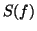
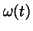
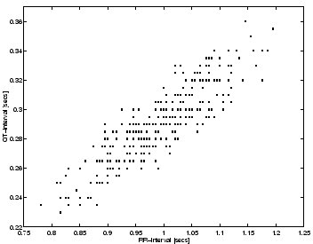

Next: Conclusions
Up: A dynamical model for
Previous: The dynamical model
Results
The synthetic ECG (Fig. 5) illustrates
the modulation of the QRS-complex due to RSA.
Observational uncertainty is incorporated by adding normally
distributed measurement errors with mean zero
and standard deviation 0.025 mV (Fig. 6a),
yielding a similar signal to a segment of real ECG from a normal human
(Fig. 6b).
In order to illustrate the
dynamics of the RR-intervals obtained from this synthetic ECG, peak detection
was used to identify the times of the R-peaks.
In the noise-free case, a simple algorithm which looks for local maxima
within a small window is sufficient. For ECGs with noise and artefacts it
may be necessary to use more complicated methods [2,3].
A comparison between the continuous process with power spectrum 
given by (3) and the piecewise constant
reconstruction of the RR-process obtained from the R-peak detection
(Fig. 7) illustrates the measurement errors that
arise when computing heart rate variability statistics from
RR-intervals.
The RR-intervals (Fig. 8a) and corresponding
instantaneous heart rate (Fig. 8b)
in units of beats per minute (bpm)
for a mean of 60 bpm and standard deviation of 5 bpm
display variability due to both RSA and Mayer waves.
A spectral estimation technique
for unevenly sampled time series, the Lomb periodogram
[15,16], was used to calculate the power
spectrum (Fig. 8c) from the RR tachogram,
derived from 5 minutes of data as recommended
by [7,10].
Despite the loss of information in going from the continuous process to the
piecewise constant reconstruction, a comparison between Fig. 4 and
Fig. 8c illustrates that it is still
possible to obtain a reasonable estimate of the power spectrum.
Figure 5:
ECG generated by dynamical model: (a) 10 seconds and (b) 50 seconds.
|
Figure 6:
Comparison between (a) synthetic ECG with additive normally
distributed measurement errors and (b) real ECG signal from a normal human.
|
Figure 7:
Reconstruction of RR-process from R-peak detection:
the underlying RR-process generated using (3) (black line)
and the RR-interval time series obtained using R-peak
detection of the synthetic ECG (grey line).
|
Figure 8:
Analysis of RR-intervals from R-peak detection of the ECG signal
generated by the dynamical model (1) with mean heart rate 60 bpm
and standard deviation 5 bpm: (a) RR-intervals,
(b) instantaneous heart rate and (c) power spectrum of the RR-intervals.
Note the two active frequencies belonging to RSA (0.25 Hz) and Mayer
waves (0.1 Hz).
|
An increase in the RR-interval implies that the trajectory has more time to
get pushed into the peak and trough given by the R and S events.
This is reflected by the strong correlation between the RR-intervals and the
RS-amplitude as shown in Fig. 9. A technique for deriving a measure
of the rate of respiration
from the ECG has been proposed [5,6].
This ECG-derived respiratory signal (EDR) is of clinical use in
situations where the ECG, but not respiration, is recorded.
The synthetic ECG provides a means of testing the robustness of such
techniques against noise and the effects of different sampling frequencies.
Figure 9:
RS-amplitudes versus RR-intervals for the synthetic ECG.
|
As a consequence of constructing the model with a variable angular frequency
, the time taken to
move from the Q event to the T event, known as the QT-interval, varies with
the RR-interval on a beat-to-beat basis.
The relationship between the QT-interval and the
RR-interval is linear as shown in Fig. 10.
Such a linear relationship has been reported for real ECGs and
has been used to calculate a corrected QT-interval [4].
It is interesting that this relationship is a direct consequence of the
model. Furthermore it may be possible to use the model to assess how much of
the variation in the QT-interval is due to RR-interval variability so that
this effect can be factored out.
Figure 10:
QT-intervals versus RR-intervals for the synthetic ECG.
|  |
Next: Conclusions
Up: A dynamical model for
Previous: The dynamical model
2003-10-08